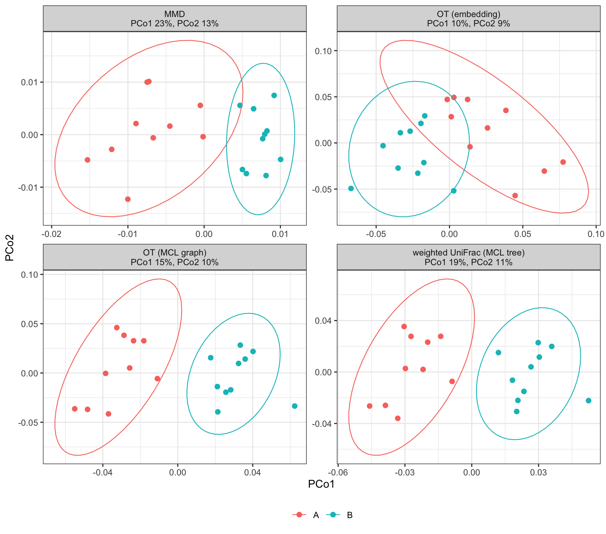

Group A’s ten samples each enrich a different domain of one CATH FunFam; group B’s each enrich a different domain of a second FunFam. Four sample distances that use the protein embeddings or the MCL graph are compared on the same counts.
library(repdist)
library(ggplot2)
library(vegan)
n_cores <- BiocParallel::multicoreWorkers()The FunFam domain universe and the negative-binomial count model of Simulation 1: every domain is present at a log-normal baseline in every sample, and each sample puts \(\rho\) = 2% of its expected abundance on its enriched domain. The \(k\)-th enriched domain of group B takes the baseline abundance of the \(k\)-th of group A. The two FunFams are drawn with a fixed seed from those with at least ten domains.
ff <- readRDS(file.path("curated", "simulation_funfam.rds"))
ann <- ff$annotation
stopifnot(identical(ann$domain, names(ff$proteins)))
nb_counts <- function(up, ids, rho, pairs, depth = 2e4) {
n <- length(up)
pi <- setNames(rlnorm(length(ids)), ids)
pi[pairs[, 2]] <- pi[pairs[, 1]] # matched baseline of enriched domains
pi <- pi / sum(pi)
s <- rlnorm(n, 0, 0.25)
e <- rlnorm(length(ids), 0, 0.5)
p <- matrix((1 - rho) * pi, n, length(ids), byrow = TRUE,
dimnames = list(names(up), ids))
for (j in seq_len(n)) {
p[j, up[[j]]] <- p[j, up[[j]]] + rho / length(up[[j]])
}
mu <- s * depth * p
phi <- (0.1 + 1 / mu) * rep(e, each = n)
matrix(rnbinom(length(mu), mu = mu, size = 1 / phi), n,
dimnames = dimnames(p))
}
n_per_group <- 10L
size <- table(ann$family)
set.seed(20261009)
fams <- sample(names(size)[size >= n_per_group], 2)
ff$families[match(fams, ff$families$family), c("family", "name")]| family | name | |
|---|---|---|
| 1184 | 3.10.105.10/FF/000001 | Oligopeptide ABC transporter, oligopeptide-binding protein |
| 13 | 3.40.50.2300/FF/000001 | DNA-binding response regulator PhoB |
pairs <- vapply(fams, function(f) {
sample(ann$domain[ann$family == f], n_per_group)
}, character(n_per_group))
up <- as.list(c(pairs))
names(up) <- sprintf("s%02d", seq_along(up))
counts <- nb_counts(up, ann$domain, 0.02, pairs)
group <- factor(rep(c("A", "B"), each = n_per_group))On unit-norm TM-Vec embeddings the Euclidean distance is \(\sqrt{2(1 - \widehat{TM})}\), a metric in the predicted TM-score.
sample_mmd(), the maximum mean
discrepancy under a Gaussian kernel on the embeddings (Gretton et al.
2012).transport::wasserstein() (Schuhmacher et
al. 2024). Under a metric cost only the mass that differs
needs to move, so each pair is solved on \((p
- q)^+\) against \((p -
q)^-\).protein_similarity(),
package defaults). An edge costs \(1 -
\widehat{TM}\), two domains cost their shortest path, and domains
with no path, or a path longer than 1, cost 1. With no edges every pair
costs 1 and this is Bray-Curtis on relative abundances.GUniFrac (Chen et al.
2012). It is the 1-Wasserstein distance under the tree’s path
metric (Evans and
Matsen 2012), so it differs from OT only in the ground
metric.S <- protein_similarity(ff$proteins, n_cores = n_cores)
bins <- bin_proteins(S)
Z <- S4Vectors::mcols(ff$proteins)$embedding
Z <- Z / sqrt(rowSums(Z^2))
rownames(Z) <- names(ff$proteins)
C <- as.matrix(dist(Z)) # sqrt(2 (1 - predicted TM))
g <- bins$membership[rownames(C)]
sums <- rowsum(t(rowsum(C, g)), g) # bin x bin sums of domain distances
n <- as.vector(table(g)[rownames(sums)])
tree <- ape::as.phylo(hclust(as.dist(sums / outer(n, n)), "average",
members = n))
w1 <- function(a, b, C) {
d <- a - b
P <- d > 0
N <- d < 0
m <- sum(d[P])
m * transport::wasserstein(d[P] / m, -d[N] / sum(-d[N]),
costm = C[P, N, drop = FALSE], p = 1)
}
edges <- which(upper.tri(S) & S > 0, arr.ind = TRUE)
graph <- igraph::graph_from_data_frame(data.frame(rownames(S)[edges[, 1]],
rownames(S)[edges[, 2]]), directed = FALSE, vertices = rownames(S))
C_graph <- pmin(igraph::distances(graph, weights = 1 - S[edges]), 1)
p <- counts / rowSums(counts)
ot <- function(C) {
ij <- combn(nrow(p), 2)
OT <- matrix(0, nrow(p), nrow(p), dimnames = list(rownames(p),
rownames(p)))
OT[t(ij[2:1, ])] <- apply(ij, 2, function(k) w1(p[k[1], ], p[k[2], ], C))
as.dist(OT)
}
D <- list(
MMD = sample_mmd(counts, ff$proteins),
`OT (embedding)` = ot(C),
`OT (MCL graph)` = ot(C_graph),
`weighted UniFrac (MCL tree)` = as.dist(GUniFrac::GUniFrac(
bin_glom(counts, bins), tree, alpha = 1,
verbose = FALSE)$unifracs[, , "d_1"])
)Ellipses are 95% ellipses per group (multivariate t).

adonis2(), 999 permutations (Anderson 2001; Oksanen et al.
2025).
knitr::kable(t(vapply(D, function(d) {
set.seed(1)
a <- adonis2(d ~ group, data = data.frame(group = group),
permutations = 999)
c(R2 = a$R2[1], F = a$F[1], p = a$`Pr(>F)`[1])
}, numeric(3))), digits = 3)| R2 | F | p | |
|---|---|---|---|
| MMD | 0.201 | 4.538 | 0.001 |
| OT (embedding) | 0.085 | 1.678 | 0.001 |
| OT (MCL graph) | 0.142 | 2.969 | 0.001 |
| weighted UniFrac (MCL tree) | 0.172 | 3.746 | 0.001 |
sessionInfo()
#> R version 4.5.2 (2025-10-31)
#> Platform: aarch64-apple-darwin20
#> Running under: macOS 27.0.1
#>
#> Matrix products: default
#> BLAS: /System/Library/Frameworks/Accelerate.framework/Versions/A/Frameworks/vecLib.framework/Versions/A/libBLAS.dylib
#> LAPACK: /Library/Frameworks/R.framework/Versions/4.5-arm64/Resources/lib/libRlapack.dylib; LAPACK version 3.12.1
#>
#> locale:
#> [1] en_US/en_US/en_US/C/en_US/en_US
#>
#> time zone: America/New_York
#> tzcode source: internal
#>
#> attached base packages:
#> [1] stats graphics grDevices utils datasets methods base
#>
#> other attached packages:
#> [1] vegan_2.7-5 permute_0.9-10 ggplot2_4.0.3 repdist_0.99.0
#>
#> loaded via a namespace (and not attached):
#> [1] tidyselect_1.2.1 timeDate_4052.112 dplyr_1.2.1
#> [4] farver_2.1.2 Biostrings_2.78.0 S7_0.2.2
#> [7] fastmap_1.2.0 digest_0.6.39 rpart_4.1.27
#> [10] transport_0.15-4 lifecycle_1.0.5 cluster_2.1.8.2
#> [13] statmod_1.5.2 magrittr_2.0.5 compiler_4.5.2
#> [16] rlang_1.3.0 sass_0.4.10 tools_4.5.2
#> [19] igraph_2.3.1 yaml_2.3.12 data.table_1.18.4
#> [22] knitr_1.51 labeling_0.4.3 statip_0.2.3
#> [25] RColorBrewer_1.1-3 BiocParallel_1.44.0 expm_1.0-0
#> [28] withr_3.0.3 BiocGenerics_0.56.0 timeSeries_4052.112
#> [31] fBasics_4052.98 grid_4.5.2 stats4_4.5.2
#> [34] stabledist_0.7-2 inline_0.3.21 scales_1.4.0
#> [37] iterators_1.0.14 MASS_7.3-65 cli_3.6.6
#> [40] rmarkdown_2.31 crayon_1.5.3 GUniFrac_1.9
#> [43] generics_0.1.4 otel_0.2.0 ape_5.8-1
#> [46] cachem_1.1.0 splines_4.5.2 parallel_4.5.2
#> [49] stable_1.1.7 XVector_0.50.0 matrixStats_1.5.0
#> [52] vctrs_0.7.3 Matrix_1.7-5 jsonlite_2.0.0
#> [55] IRanges_2.44.0 S4Vectors_0.48.1 rmutil_1.1.10
#> [58] ggrepel_0.9.8 clue_0.3-68 foreach_1.5.2
#> [61] jquerylib_0.1.4 spatial_7.3-18 glue_1.8.1
#> [64] codetools_0.2-20 MCL_1.0 gtable_0.3.6
#> [67] tibble_3.3.1 pillar_1.11.1 htmltools_0.5.9
#> [70] Seqinfo_1.0.0 R6_2.6.1 evaluate_1.0.5
#> [73] lattice_0.22-9 modeest_2.4.0 bslib_0.11.0
#> [76] Rcpp_1.1.2 nlme_3.1-169 mgcv_1.9-4
#> [79] xfun_0.58 pkgconfig_2.0.3